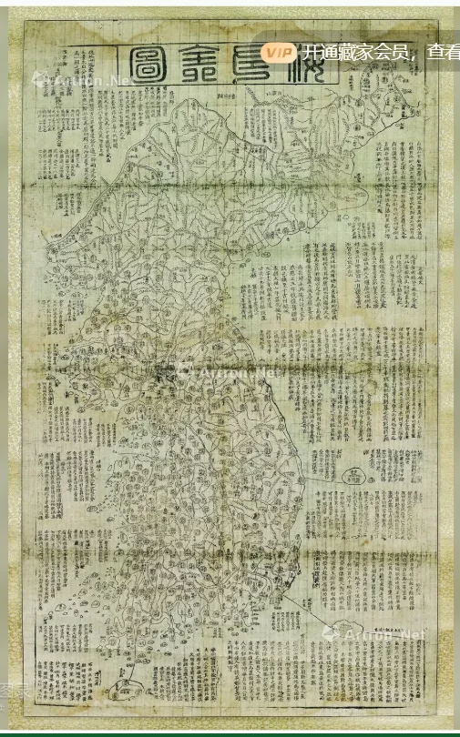

 点击图片可查看大图 · 原始图像 505×810 px 未提供 古董朝鲜木版画地图 —— 成交记录未提供 估价RMB 67,734-101,601 记录信息 拍卖日期2016-11-20 11:00 拍卖公司美国蔡以声 拍卖专场亚洲及国际精品拍卖会 亚洲及国际精品专场 创作年代原表未著录 开本—— 尺寸类型未著录 高 × 宽未著录 纸张原表未著录 成交价原文无成交价（未提供） 来源位置Excel 第 25 行